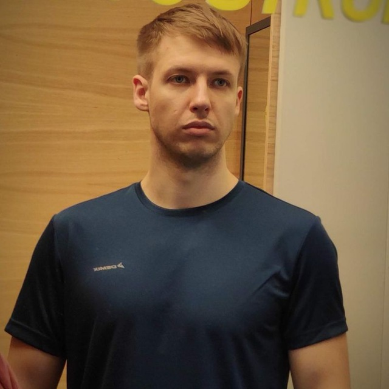

Танадайчук Кирилл Сергеевич

35 лет
Навыки:
- Прошёл практические курсы по основам разработки приложений на Kotlin/Java
- Знаю основные паттерны ООП.
- Знаю основные компоненты Android SDK
- Прохожу практический курс Android разработки
- Умею работать с инструкциями и документацией
- Базовое знание: HTML, JSON, XML
- Знание архитектуры MVVM
- Знание GIT (GitHub - работа с локальными и удалёнными репозиториями)
- Есть понимание основ тестирования (написание JUnit тестов, составление тестовой документации)